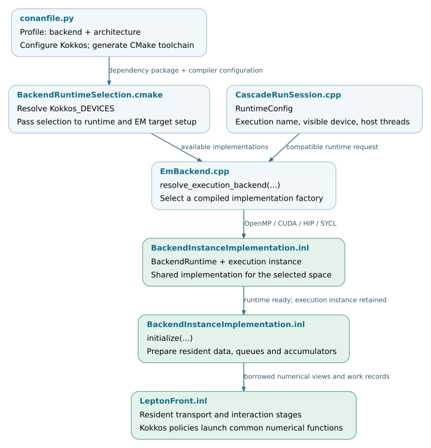

CPU and GPU backend development
Backend development concerns how shared calculations are compiled, how their data are stored and how work is submitted to CPU threads or GPU devices. The numerical model should remain in the common implementation whenever its inputs and outputs are unchanged. Backend-specific work belongs in the runtime, data-transfer or execution-policy code that requires it.
Use Installation to prepare a working installation. This chapter
explains how to develop and maintain the code behind that installation.
Examples refer to the guide’s d5297c43 source baseline; supported build
configurations and actual validation on particular hardware are identified
separately.
Backend development tasks
Task |
Implementation work |
Detailed guide |
|---|---|---|
Prepare or update a build |
Match the Kokkos execution spaces, compiler, architecture and CORSIKA targets; verify both the build tree and installed package. |
|
Change resource selection or session reuse |
Preserve device visibility, initialization ownership and the lifetime of views and execution-space instances across events. |
|
Add a calculation to device execution |
Audit its complete call chain, accessible data and output ownership; register tests with the device compiler. |
|
Tune launches, scans or synchronization |
Change the execution policy or a narrow backend adapter; measure the affected stages and complete showers with matched inputs. |
|
Establish support for another platform |
Verify compilation, runtime lifecycle, numerical tests and application execution on that platform; record the tested toolchain and device. |
Running and extending the tests, Comparing numerical and shower results |
Source organization
Build configuration selects and exports library targets. Public runtime
interfaces are under corsika/kokkos/runtime and their compiled
implementations are under src/kokkos/runtime. Application device parsing
is separate from runtime lifetime and from the EM implementation factories.
tools/ └── build_kokkos.sh prerequisites, profile selection and backend-specific build/install ./ └── conanfile.py dependency requirements and Kokkos options externals/conan/ └── profiles backend and architecture profiles cmake/ ├── BackendRuntimeSelection.cmake dependency-device combination to production runtime selection ├── BackendRuntimeTargets.cmake runtime libraries and device-compiler configuration ├── BackendApplicationTargets.cmake application support and EM backend factories └── corsikaConfig.cmake.in installed dependency and target discovery corsika/kokkos/runtime/ ├── Runtime.hpp generic Kokkos lifetime contract ├── BackendRuntime.hpp production runtime and cooperative lease interface ├── RuntimeConfig.hpp execution request and resource configuration ├── RuntimeInfo.hpp resolved runtime metadata └── TuningParameters.hpp launch and tile settings src/kokkos/runtime/ ├── Runtime.cpp generic ownership and configuration checks ├── BackendRuntime.cpp production initialization, metadata and probes ├── BackendSelection.cpp requested execution name to compiled implementation └── TuningCache.cpp configuration matching and cached tuning src/kokkos/application/ ├── DeviceSelection.cpp GPU discovery, selection and visibility mapping ├── DeviceCliOptions.cpp application option preparation └── BackendCli.cpp backend option parsing src/kokkos/em/ ├── EmBackend.cpp host facade and execution-space factory dispatch ├── HipBackendInstance.cpp HIP instantiation of the shared implementation ├── CudaBackendInstance.cpp CUDA instantiation of the shared implementation └── OpenMPBackendInstance.cpp OpenMP instantiation of the shared implementation corsika/detail/kokkos/em/execution/ └── BackendInstanceImplementation.inl resident EM implementation for the selected execution space
Development verification
Start with runtime and storage tests on the selected backend, followed by the affected numerical stages and application path. Include multiple events when changing session reuse, and explicit worker execution when changing coordination. Running and extending the tests identifies the registrations and selectors. Host-only tests do not exercise device kernels or device-specific synchronization.
Retain the resolved RuntimeInfo, build configuration and tuning settings
with test results. These identify the execution implementation but do not
replace the physical conditions, table identities or random-stream policy.
For performance changes, report both the affected operation and the event
measurement as described in Measuring performance.
Build-to-execution flow
The build determines the available factories. At run time, the application
supplies a compatible RuntimeConfig; the selected implementation acquires
its runtime and initializes resident storage before submitting kernels. The
process coordinator, when selected, repeats this local setup within each GPU
worker rather than creating one cross-device Kokkos execution instance.


Build selection and runtime handoff for the standard EM backend. Open the
SVG for links to the checked source revision.
SVG ·
Editable DOT source.